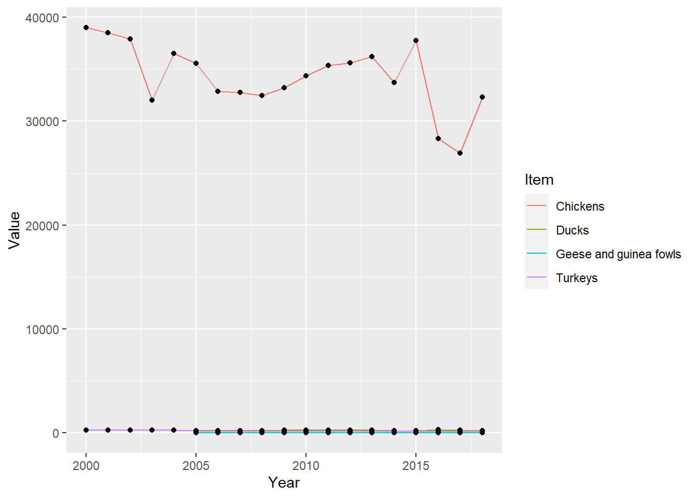

Code
library(tidyverse)
library(dplyr)
library(readxl)
library(ggplot2)
options(scipen=999)
knitr::opts_chunk$set(echo = TRUE, warning=FALSE, message=FALSE)library(tidyverse)
library(dplyr)
library(readxl)
library(ggplot2)
options(scipen=999)
knitr::opts_chunk$set(echo = TRUE, warning=FALSE, message=FALSE)! Question: How would i find the difference between first and last years Value cols for each category in each region? !
Today’s challenge is to
Read in one (or more) of the following data sets, available in the posts/_data folder, using the correct R package and command.
birdsData <- read_csv("_data/birds.csv")
birdsData# A tibble: 30,977 × 14
Domain Cod…¹ Domain Area …² Area Eleme…³ Element Item …⁴ Item Year …⁵ Year
<chr> <chr> <dbl> <chr> <dbl> <chr> <dbl> <chr> <dbl> <dbl>
1 QA Live … 2 Afgh… 5112 Stocks 1057 Chic… 1961 1961
2 QA Live … 2 Afgh… 5112 Stocks 1057 Chic… 1962 1962
3 QA Live … 2 Afgh… 5112 Stocks 1057 Chic… 1963 1963
4 QA Live … 2 Afgh… 5112 Stocks 1057 Chic… 1964 1964
5 QA Live … 2 Afgh… 5112 Stocks 1057 Chic… 1965 1965
6 QA Live … 2 Afgh… 5112 Stocks 1057 Chic… 1966 1966
7 QA Live … 2 Afgh… 5112 Stocks 1057 Chic… 1967 1967
8 QA Live … 2 Afgh… 5112 Stocks 1057 Chic… 1968 1968
9 QA Live … 2 Afgh… 5112 Stocks 1057 Chic… 1969 1969
10 QA Live … 2 Afgh… 5112 Stocks 1057 Chic… 1970 1970
# … with 30,967 more rows, 4 more variables: Unit <chr>, Value <dbl>,
# Flag <chr>, `Flag Description` <chr>, and abbreviated variable names
# ¹`Domain Code`, ²`Area Code`, ³`Element Code`, ⁴`Item Code`, ⁵`Year Code`Grouping by item and tallying we see the below counts of rows of information on each of the types of birds in this dataset.
by_item <- birdsData %>% group_by(Item)
by_item %>% tally()# A tibble: 5 × 2
Item n
<chr> <int>
1 Chickens 13074
2 Ducks 6909
3 Geese and guinea fowls 4136
4 Pigeons, other birds 1165
5 Turkeys 5693Summarizing by count shows us the total amount of birds in each category. (NA’s removed)
summarize(by_item, count=sum(Value,na.rm = TRUE))# A tibble: 5 × 2
Item count
<chr> <dbl>
1 Chickens 2696862583
2 Ducks 149781301
3 Geese and guinea fowls 41136874
4 Pigeons, other birds 6822856
5 Turkeys 81850064Summarizing the Grouping by area and Item gives us the mean number of each item type from 1961-2018 (Where a value exists)
by_area <- birdsData %>% group_by(Area,Item)
by_area# A tibble: 30,977 × 14
# Groups: Area, Item [601]
Domain Cod…¹ Domain Area …² Area Eleme…³ Element Item …⁴ Item Year …⁵ Year
<chr> <chr> <dbl> <chr> <dbl> <chr> <dbl> <chr> <dbl> <dbl>
1 QA Live … 2 Afgh… 5112 Stocks 1057 Chic… 1961 1961
2 QA Live … 2 Afgh… 5112 Stocks 1057 Chic… 1962 1962
3 QA Live … 2 Afgh… 5112 Stocks 1057 Chic… 1963 1963
4 QA Live … 2 Afgh… 5112 Stocks 1057 Chic… 1964 1964
5 QA Live … 2 Afgh… 5112 Stocks 1057 Chic… 1965 1965
6 QA Live … 2 Afgh… 5112 Stocks 1057 Chic… 1966 1966
7 QA Live … 2 Afgh… 5112 Stocks 1057 Chic… 1967 1967
8 QA Live … 2 Afgh… 5112 Stocks 1057 Chic… 1968 1968
9 QA Live … 2 Afgh… 5112 Stocks 1057 Chic… 1969 1969
10 QA Live … 2 Afgh… 5112 Stocks 1057 Chic… 1970 1970
# … with 30,967 more rows, 4 more variables: Unit <chr>, Value <dbl>,
# Flag <chr>, `Flag Description` <chr>, and abbreviated variable names
# ¹`Domain Code`, ²`Area Code`, ³`Element Code`, ⁴`Item Code`, ⁵`Year Code`summarise(by_area, birds = round(mean(Value, na.rm = TRUE)))# A tibble: 601 × 3
# Groups: Area [248]
Area Item birds
<chr> <chr> <dbl>
1 Afghanistan Chickens 8099
2 Africa Chickens 936779
3 Africa Ducks 13639
4 Africa Geese and guinea fowls 12164
5 Africa Pigeons, other birds 11222
6 Africa Turkeys 9004
7 Albania Chickens 4055
8 Albania Ducks 558
9 Albania Geese and guinea fowls 396
10 Albania Turkeys 750
# … with 591 more rowsUsing a combination of words and results of R commands, can you provide a high level description of the data? Describe as efficiently as possible where/how the data was (likely) gathered, indicate the cases and variables (both the interpretation and any details you deem useful to the reader to fully understand your chosen data).
This data appears to be about the amounts of different varieties of bird category by area/region over time. Based on the variety of different collection methods seen below, we can assume this info is a conglomeration from a few sources.
FAO stands for the food and agriculture association
unique(birdsData$`Flag Description`)[1] "FAO estimate"
[2] "Official data"
[3] "FAO data based on imputation methodology"
[4] "Data not available"
[5] "Unofficial figure"
[6] "Aggregate, may include official, semi-official, estimated or calculated data"An interesting area I wanted to filter on was the flag for how the data was collected.
Due to using the “na.rm = true” modifier in my earlier code, we never included any rows where the data was not available however we may want to see only official data.
Below we see a snapshot of the most recent and official data
by_area_year <- birdsData %>% group_by(Area,Year,Item)
by_area_year# A tibble: 30,977 × 14
# Groups: Area, Year, Item [30,977]
Domain Cod…¹ Domain Area …² Area Eleme…³ Element Item …⁴ Item Year …⁵ Year
<chr> <chr> <dbl> <chr> <dbl> <chr> <dbl> <chr> <dbl> <dbl>
1 QA Live … 2 Afgh… 5112 Stocks 1057 Chic… 1961 1961
2 QA Live … 2 Afgh… 5112 Stocks 1057 Chic… 1962 1962
3 QA Live … 2 Afgh… 5112 Stocks 1057 Chic… 1963 1963
4 QA Live … 2 Afgh… 5112 Stocks 1057 Chic… 1964 1964
5 QA Live … 2 Afgh… 5112 Stocks 1057 Chic… 1965 1965
6 QA Live … 2 Afgh… 5112 Stocks 1057 Chic… 1966 1966
7 QA Live … 2 Afgh… 5112 Stocks 1057 Chic… 1967 1967
8 QA Live … 2 Afgh… 5112 Stocks 1057 Chic… 1968 1968
9 QA Live … 2 Afgh… 5112 Stocks 1057 Chic… 1969 1969
10 QA Live … 2 Afgh… 5112 Stocks 1057 Chic… 1970 1970
# … with 30,967 more rows, 4 more variables: Unit <chr>, Value <dbl>,
# Flag <chr>, `Flag Description` <chr>, and abbreviated variable names
# ¹`Domain Code`, ²`Area Code`, ³`Element Code`, ⁴`Item Code`, ⁵`Year Code`by_area_year %>%
filter(`Flag Description` == "Official data",Year == 2018) %>%
summarise(NumberOfBirds = Value)# A tibble: 135 × 4
# Groups: Area, Year [66]
Area Year Item NumberOfBirds
<chr> <dbl> <chr> <dbl>
1 Albania 2018 Chickens 7272
2 Albania 2018 Turkeys 403
3 Argentina 2018 Chickens 113600
4 Armenia 2018 Chickens 4406
5 Azerbaijan 2018 Chickens 30498
6 Bangladesh 2018 Chickens 282145
7 Bangladesh 2018 Ducks 55853
8 Belgium 2018 Chickens 32327
9 Benin 2018 Chickens 21304
10 Bosnia and Herzegovina 2018 Chickens 16229
# … with 125 more rowsNext I add a calculated field to see how the populations have changed over the years. As a test I will be exploring Belgium.
by_area_year%>%
filter(Area == "Belgium")%>%
ggplot(aes(Year,Value)) + geom_line(aes(color=Item)) +geom_point()
After making this chart I wanted to know what the entire pool of sampled areas chicken populations might have looked like.
Chickens_by_area_year <- birdsData %>% filter(Item == "Chickens", Area != "World")%>%group_by(Area,Year)
Chickens_by_area_year %>%
ggplot(aes(Year,Value)) + geom_line(aes(color=Area)) +geom_point() + theme(legend.position = "none")
We see in this graph that there was a sharp decline in the global population of chickens from 1997-1998. After some research I believe this was due to the avian flu which gained traction during this time period.
https://www.nytimes.com/1997/12/29/world/chickens-killed-in-hong-kong-to-combat-flu.html
Conduct some exploratory data analysis, using dplyr commands such as group_by(), select(), filter(), and summarise(). Find the central tendency (mean, median, mode) and dispersion (standard deviation, min/max/quantile) for different subgroups within the data set.
According to official data the average amount of chickens in 2018 per country was: (Note: if 1000 Head means this value is a grouping of a thousand then we would multiply by 1000 as done below)
birdsData %>%
filter(`Flag Description` == "Official data",Year == 2018,Area!= "World") %>%
group_by(Item)%>%
summarise(MeanNumBirds = (mean(Value,na.rm= TRUE)*1000),sd=sd(Value,na.rm= TRUE))# A tibble: 4 × 3
Item MeanNumBirds sd
<chr> <dbl> <dbl>
1 Chickens 134517825. 357894.
2 Ducks 10558815. 20605.
3 Geese and guinea fowls 885158. 1590.
4 Turkeys 11933923. 47711.An interesting comment here is how across each region the mean number of ducks and turkeys are relatively the same however the Standard deviation for the number of Turkeys is almost double that of ducks. I would think this is because in more of the developed world Turkeys are farmed over Ducks. With only a portion of the world farming turkeys and ducks naturally existing globally, this difference would make sense.
Minimum chickens, Aruba had no officially documented chickens in 1991 and 1992
birdsData %>%
filter(Item=="Chickens",Value == 0)# A tibble: 2 × 14
Domai…¹ Domain Area …² Area Eleme…³ Element Item …⁴ Item Year …⁵ Year Unit
<chr> <chr> <dbl> <chr> <dbl> <chr> <dbl> <chr> <dbl> <dbl> <chr>
1 QA Live … 22 Aruba 5112 Stocks 1057 Chic… 1991 1991 1000…
2 QA Live … 22 Aruba 5112 Stocks 1057 Chic… 1992 1992 1000…
# … with 3 more variables: Value <dbl>, Flag <chr>, `Flag Description` <chr>,
# and abbreviated variable names ¹`Domain Code`, ²`Area Code`,
# ³`Element Code`, ⁴`Item Code`, ⁵`Year Code`The maximum number of chickens in one area was Asia in 2018 with 13630958 1000 Heads of chickens
birdsData %>%
filter(Item=="Chickens", Area != "World")%>%
slice_max(order_by = Value)# A tibble: 1 × 14
Domai…¹ Domain Area …² Area Eleme…³ Element Item …⁴ Item Year …⁵ Year Unit
<chr> <chr> <dbl> <chr> <dbl> <chr> <dbl> <chr> <dbl> <dbl> <chr>
1 QA Live … 5300 Asia 5112 Stocks 1057 Chic… 2018 2018 1000…
# … with 3 more variables: Value <dbl>, Flag <chr>, `Flag Description` <chr>,
# and abbreviated variable names ¹`Domain Code`, ²`Area Code`,
# ³`Element Code`, ⁴`Item Code`, ⁵`Year Code`Included throughout.